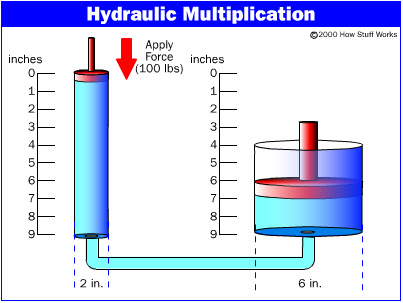
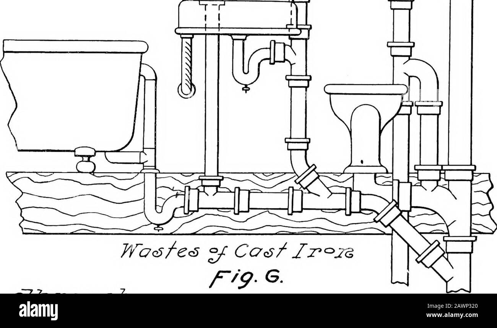
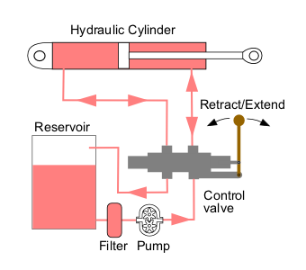
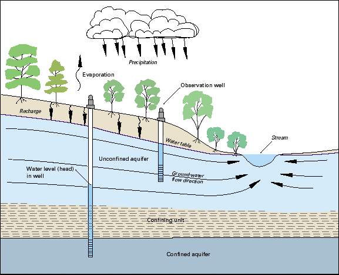

Εngineering Ηydrology
Hydrological engineering, sometimes called hydrologic engineering or water resources engineering, is an engineering specialty that focuses on water resources. Hydrological engineering is chiefly concerned with the flow and storage of water, principally water and sewage.

Applied plumbing

Hydraulic works
hydraulics, branch of science concerned with the practical applications of fluids, primarily liquids, in motion. Hydraulics deals with such matters as the flow of liquids in pipes, rivers, and channels and their confinement by dams and tanks.

Open pipes and plumbing constructions
Different Types of Plumbing Pipes used in Building Construction:
Soil Pipe,
Wastewater Pipe,
Rainwater Pipe,
Vent Pipe,
Anti-Siphonage Pipe.

Groundwater hydrology
Ground-water hydrology is the subdivision of the science of hydrology that deals with the occurrence, movement, and quality of water beneath the Earth's surface.